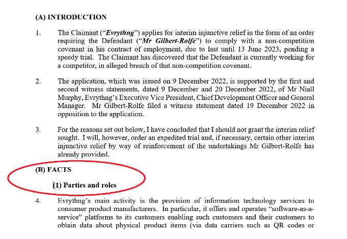
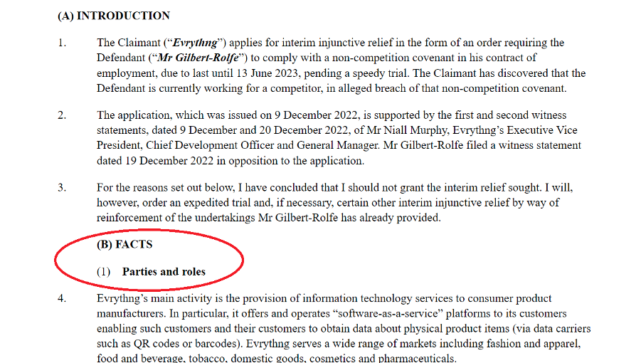
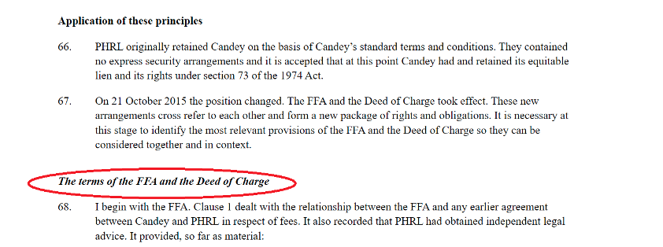
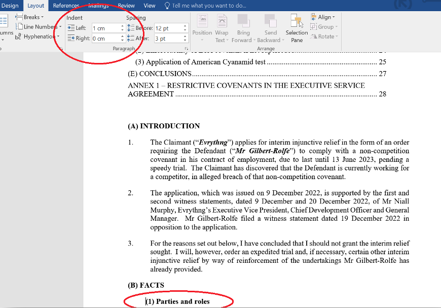
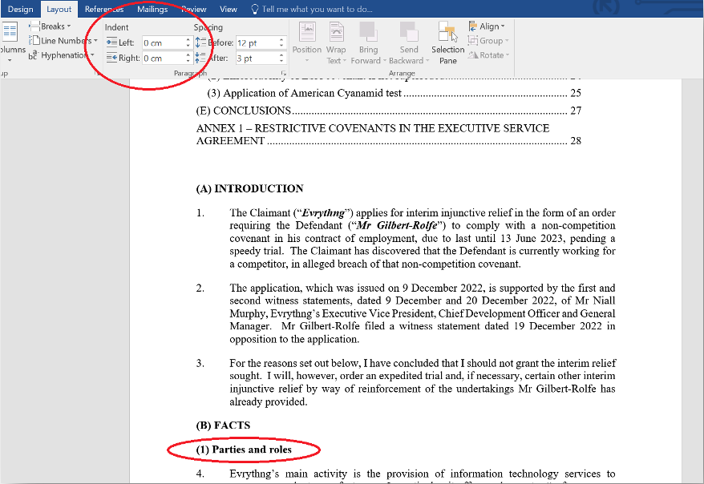

While indentation is often used to denote subsections, we recommend not doing so for any document to be uploaded onto the Find Case Law service. The parser can struggle to differentiate and so make all headings indented.
Evrythng Ltd v Cyrus Gilbert-Rolfe [2023] EWHC 7 (Comm)

Though the indentation of the subsections looks fine in Word, when sent through the parser both the heading and subheading become indented:

Headings and subheadings should therefore be uniform in alignment. If you are keen to have a difference between these two content groups, we recommend using styling (e.g. italics or bold) or labels (e.g.1.1, 1.A etc.).

To amend indentation you can go into the Layout section in Word:

As you can see, a 1cm indent has been applied. If we remove this, the subheading will be flush to the margin just like the heading:
